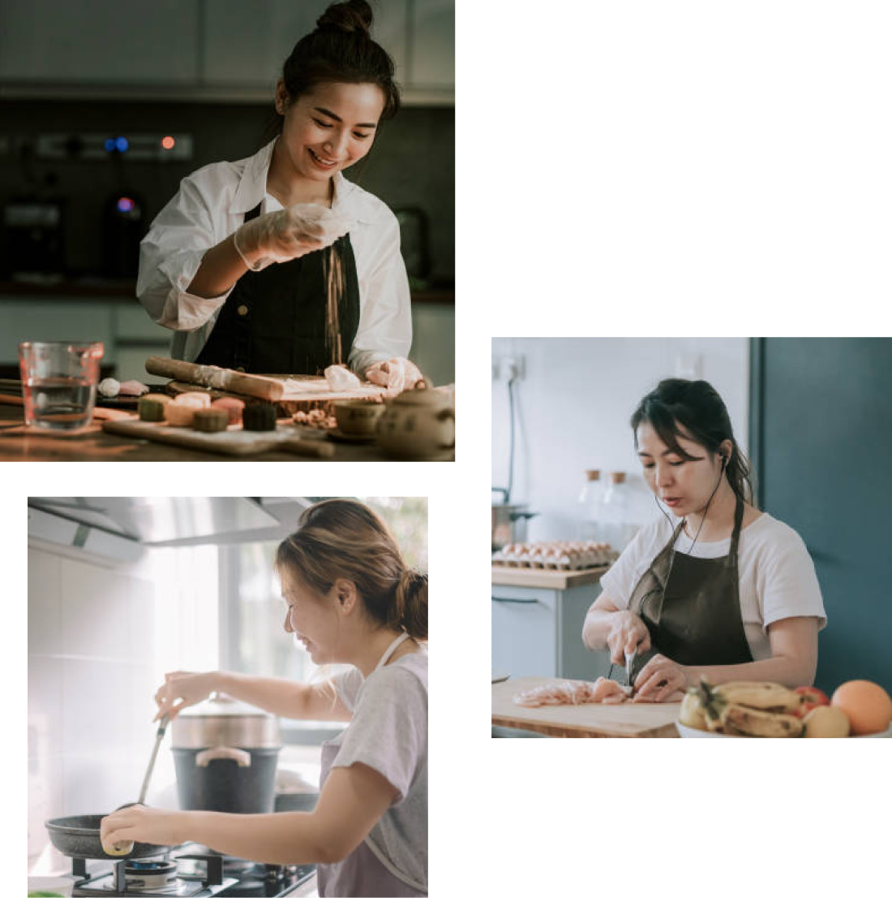

金睿彬 김예빈
人稱金姨母。雖然姓金，但絕對是土生土長台灣人。因為熱愛 Kpop 所以開始喜歡韓國，隨著深入了解，就更想去前往當地體驗生活。
在台灣畢業工作一段時間後，開始規劃前往韓國，趁著讀語學堂與 Working Holiday 期間，遊歷韓國大大小小的市場、餐廳、景點等。回台灣後對韓國食物念念不忘之下，創立了《食堂》分享食譜。
不僅教做菜，更教人懂菜，由飲食文化談起，從備料重點、製作技巧、延伸應用到保存期限等起源與知識。預期大家會在家庭式廚房做出我們的料理，簡化、調整到讓人可以輕鬆跟著我們 Step by Step，做出不平凡的一日三餐。
近年還開設了食堂私廚餐桌，原本只為了招待朋友來吃難以自己處理的料理，現在將廚房公開預約，將線上網友變成線下朋友。
